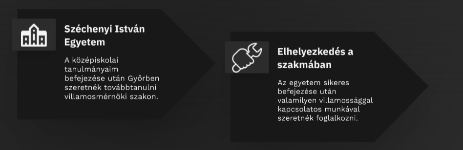

Céljaim
Az ipari informatika technikusi szakon már elsajátítottam a szakma alapjait,
és a gyakorlatban is kipróbáltam a tudásomat a duális képzés során. Fontos számomra a folyamatos fejlődés és az új technológiák megismerése.
Terveim szerint a következő tanévben megkezdem felsőfokú tanulmányaimat a győri Széchenyi István egyetemen, Villamosmérnöki szakon.
Célom, hogy a jövőben elektronikai területen dolgozzak, és tudásomat különféle projektekben kamatoztassam.
Összességében szertnék olyan szakember lenni, aki precíz, megbízható, kreatív és mindig kész a fejlődésre, és akire számítani lehet bármilyen projektben vagy feladatban.
